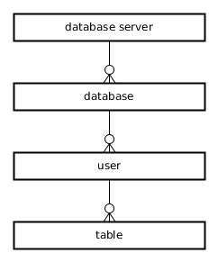

Table sysobjects is an interesting table (do a sp_cols on it to see more).
To verify that table sysobjects is among the system tables in a database do:
select name from sysobjects where type='S'
To view all user tables in a database do:
select name from sysobjects where type='U'… this is the same set returned with
sp_ls
sp_helpdbsp_help sometablenamesp_cols sometablesp_helprotect mperdike — LLNote: this only works in the axafusers databasesp_lssp_ls asp_lsnsp_ls vsp_ls psp_ls tNB: CfA-specific
You need to connect to the sybsystemprocs database:sqsh -Ssqldev -Dsybsystemprocs -Umperdike… and then do, e.g.:
sp_helptext sp_cols;
sqsh -Uloginname -SservernameWhat is provided in the above incantation is the loginname, which is mapped to a username. Once inside (at the prompt) you can obtain the username with:
select user_name();… which may very well not be the same as the loginame. The loginname itself is shown with:
select suser_name();In general, the dbadmin will map login names to usernames. The mappings are shown by the command:
sp_helpuser;To see the database we were connected to, do a:
select db_name();… if a database was not provided as a command line argument on the
sqsh
tool invocation (using -D), then that database is the default database
associated with a given login.
Tools such as sqsh use the so called "login names". Once inside the prompt these are mapped to the DB user names (I've also seen those referred to as "name-in-db"). Every login name has a default database.
The default database for a particular login can be obtained by the following query:
select name, dbname from master.dbo.syslogins; | grep part-of-the-username(source)
In ASE, there is no concept of a "schema" (like you have in PostgreSQL or Oracle), instead tables are owned by users. So, hierarchically, the concepts of database server, database, user and table are arranged as follows:
Referential integrity constraints can cross databases.
Once connected to a Sybase server (e.g. by means of the sqsh tool) you can use either of the below forms to access a table:
SELECT * FROM cxcaccounts.dbo.a where:
SELECT * FROM cxcaccounts..a where the two dots .. stand for the owner of that table (or the default owner / usename—this is not very clear at the moment)
See also this dba.stackexchange question of mine.
An ASE database server (single OS process with a single listening port) contains multiple databases, some of which are "system" databases and the rest are "user" databases (e.g. in the CfA environment these would be cxcaccounts, axafusers and about 40 others). Two system databases that are always present in an ASE system are:
/soft/SYBASE15.7/interfaces